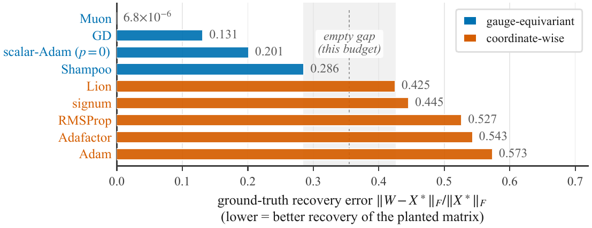
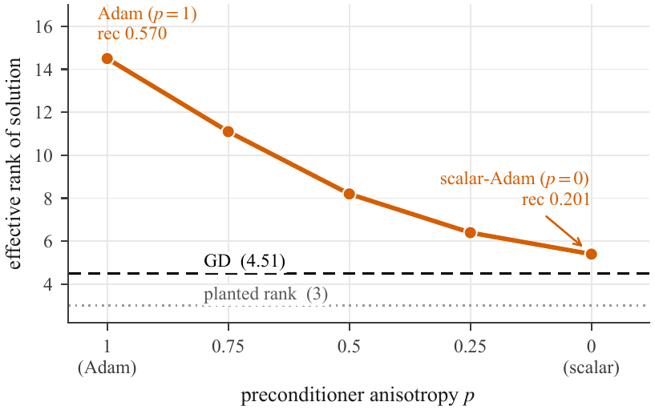
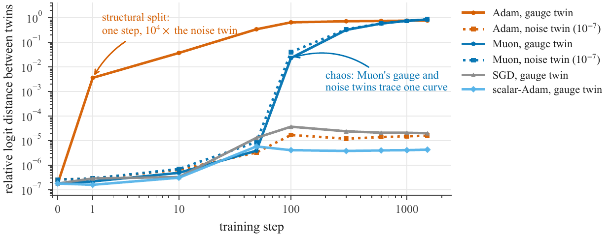
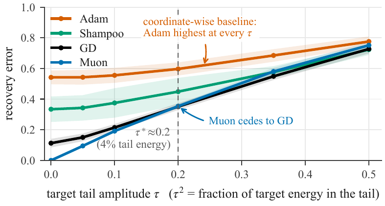
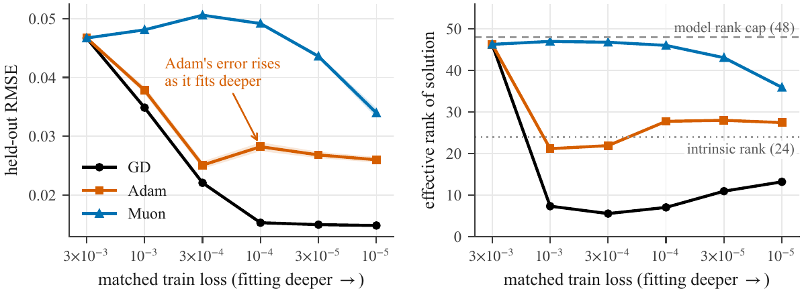
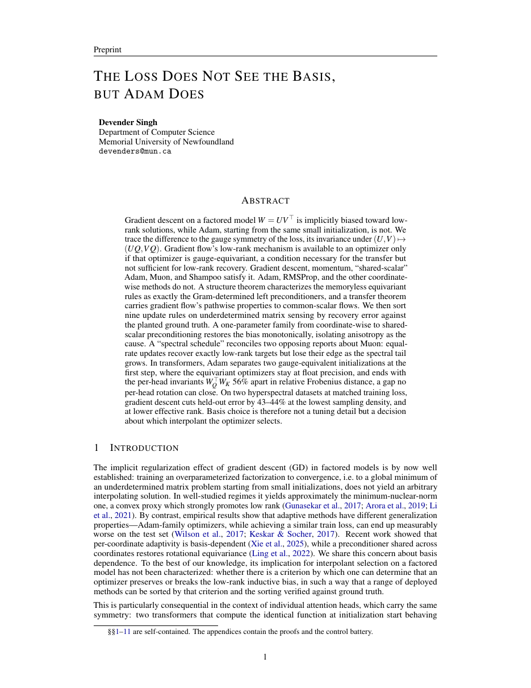

Department of Computer Science, Memorial University of Newfoundland
arXiv identifier pending — the link goes live when the preprint is announced.

A factored model $W = UV^\top$ cannot distinguish $(U,V)$ from $(UQ,VQ)$ for orthogonal $Q$ — the loss is blind to the choice of latent basis. Adam is not.
That single asymmetry decides whether an optimizer can inherit gradient flow's low-rank implicit bias. It sorts nine deployed optimizers into two clusters with nothing in between, and it survives being turned into a dial, an attention head, and two hyperspectral datasets.
Gradient descent on a factored model $W = UV^\top$ is implicitly biased toward low-rank solutions, while Adam, starting from the same small initialization, is not. We trace the difference to the gauge symmetry of the loss, its invariance under $(U, V) \mapsto (UQ, VQ)$. Gradient flow's low-rank mechanism is available to an optimizer only if that optimizer is gauge-equivariant, a condition necessary for the transfer but not sufficient for low-rank recovery. Gradient descent, momentum, “shared-scalar” Adam, Muon, and Shampoo satisfy it. Adam, RMSProp, and the other coordinate-wise methods do not. A structure theorem characterizes the memoryless equivariant rules as exactly the Gram-determined left preconditioners, and a transfer theorem carries gradient flow's pathwise properties to common-scalar flows.
We then sort nine update rules on underdetermined matrix sensing by recovery error against the planted ground truth. A one-parameter family from coordinate-wise to shared-scalar preconditioning restores the bias monotonically, isolating anisotropy as the cause. A “spectral schedule” reconciles two opposing reports about Muon: equal-rate updates recover exactly low-rank targets but lose their edge as the spectral tail grows. In transformers, Adam separates two gauge-equivalent initializations at the first step, where the equivariant optimizers stay at float precision, and ends with the per-head invariants $W_Q^\top W_K$ $56\%$ apart in relative Frobenius distance, a gap no per-head rotation can close. On two hyperspectral datasets at matched training loss, gradient descent cuts held-out error by $43$–$44\%$ at the lowest sampling density, and at lower effective rank. Basis choice is therefore not a tuning detail but a decision about which interpolant the optimizer selects.
One symmetry, and what respecting it buys you.
The objective $L(U,V) = f(UV^\top)$ is unchanged by
$$(U, V) \;\longmapsto\; (UQ,\; VQ), \qquad Q \in O(k),$$
because rotating the latent bases alters neither $W = UV^\top$ nor any model prediction. This is the gauge symmetry. Optimization, however, happens in $(U,V)$-space, not in $W$-space — and different algorithms treat this symmetry very differently.
An optimizer that is equivariant under the gauge behaves identically no matter which point of the orbit it is handed. One that is not reads a preferred basis, and can select a different interpolant depending on where in the orbit it happens to start.
The update depends on the factors only through $GG^\top$. Behaviour is identical across every gauge-equivalent basis, so gradient flow's low-rank mechanism is available.
A fixed entrywise nonlinearity at zero optimizer state breaks the symmetry. The rule reads a basis the loss cannot see, and its choice of interpolant follows.
Necessary, not sufficient. Equivariance buys access to gradient flow's dynamics; it does not by itself deliver a low-rank solution. Inside the equivariant class a second axis takes over — the spectral schedule, which governs how singular values grow during training. And a coordinate-wise method is not forbidden from reaching a low-rank solution by some other route; it simply has less direct access to one. Annealed sign descent at long horizons is exactly such a case, and it is documented in the appendix rather than hidden.
A memoryless update rule is gauge-equivariant precisely when it takes the form $\Delta = H(GG^\top)\,G$ for some preconditioner $H$ — the Gram-determined left preconditioners. The choice of $H$ is what distinguishes one equivariant optimizer from another. (Stated for full-column-rank $G$ with $k \le n$.)
Dynamics under a shared scalar preconditioner correspond to gradient flow under a rescaled time parameterization. Existing pathwise results for gradient flow therefore carry over directly, whenever their own conditions are met by the same objective.
For Adam with zero-initialized optimizer state, the departure from equivariance at the very first step admits an exact closed form — the split is not an accumulation of numerical error but a property of the update rule.
Matrix sensing, $40\times40$, rank-3 ground truth, $m = 2\times$ d.o.f., no weight decay, three paired seeds, all runs continued to interpolation.
| method | recovery ↓ | erank | bal | train loss | notes |
|---|---|---|---|---|---|
| min-nuclear-norm | 0.0335 | 3.30 | — | — | convex reference, not an optimizer |
| gauge-equivariant | |||||
| Muon (cosine) | 0.0000 | 2.95 | 1.65 | 5.7×10⁻⁸ | near-exact ($6.8{\times}10^{-6}$ unrounded) |
| GD | 0.1312 | 4.51 | 0.06 | 6.5×10⁻⁸ | Gunasekar anchor |
| scalar-Adam ($p{=}0$) | 0.2010 | 5.43 | 0.14 | 3.5×10⁻⁸ | equivariant; flow proxy |
| Shampoo | 0.2856 | 6.95 | 1.47 | 4.5×10⁻⁸ | |
| coordinate-wise | |||||
| Lion (cosine) | 0.4248 | 10.58 | 7.35 | 8.0×10⁻⁸ | |
| signum (cosine) | 0.4454 | 7.83 | 1.79 | 6.5×10⁻⁸ | low-rank-but-wrong |
| RMSProp (cosine) | 0.5266 | 12.80 | 4.74 | 6.0×10⁻⁸ | needs decay |
| Adafactor | 0.5430 | 10.72 | 3.40 | 5.6×10⁻⁸ | factored diagonal still breaks it |
| Adam | 0.5734 | 14.37 | 5.37 | 1.2×10⁻¹¹ | Wilson anchor |
Recovery is $\|W - X^\ast\|_F/\|X^\ast\|_F$; erank is effective rank; bal is $\|U^\top U - V^\top V\|_F$. Means over three seeds, no dispersion quoted — the separation claim itself rests on the ten-seed ladder in the appendix, where it holds at every size up to $n{=}256$.
Because all nine methods interpolate, the difference cannot be attributed to how far each one got. It is a difference in which interpolant was selected. Measured against the convex reference at $0.0335$, Muon is better, GD, scalar-Adam and Shampoo are within an order of magnitude, and every coordinate-wise method is worse by more than one.
Interpolate Adam's denominator from per-coordinate to shared-scalar, and watch the bias come back.

This turns a binary observation into a continuous one. It also names the trade: the same anisotropy that erodes the bias is what buys Adam its speed. Moving to $p{=}0$ multiplies the steps needed to interpolate by roughly eight on this task.
Each head's logits depend on $W_Q$ and $W_K$ only through $W_Q^\top W_K$ — so each head carries the identical symmetry.

After one step the Adam twins' logit difference is $3.6\times10^{-3}$ against $2.9\times10^{-7}$ for the noise twin at the same step. The relative logit distance saturates at $0.77$, and the head invariants $W_Q^\top W_K$ finish $56\%$ apart in relative Frobenius distance — a gap no per-head rotation can close, with a direct consequence for alignment-based model merging.
A control rules out the obvious objection: perturbing the weights by $10^{-7}$ in the same basis leaves a step-one drift four orders of magnitude below the gauge split. And none of this depends on the toy setting — the same effect appears in a six-layer character-level language model at $d_{\text{model}}{=}256$ under mini-batch noise.
What Adam learns in an attention head depends on an arbitrary choice of coordinates that has no effect on the model's input–output behaviour.
A second axis: the spectral schedule — and a reconciliation of two opposing reports about Muon.

This is what reconciles “Muon recovers exactly” with “Muon removes the simplicity bias.” They are two readings of the same schedule at different points on one axis. Uniform growth across modes is optimal when the signal really is low-rank, and it hurts on signals carrying a tail that should not be fit. A closed-form two-timescale approximation recovers a timing mechanism compatible with that boundary.
Two hyperspectral image-completion benchmarks, learning rates chosen by a train-only criterion.

At the lowest sampling density, gradient descent cuts held-out error by $43$–$44\%$ relative to Adam, at a much lower effective rank, in all four seeds and on both datasets.
The framework was not only diagnostic. Applied to our own previously published optimizer, FlowAdam (IJCNN 2026), it located a defect: the coordinate-wise clip on the injected flow velocity is by itself enough to break equivariance, quietly suppressing the very bias the injection was designed to add. Replacing it with a global-norm clip restores equivariance of the injected velocity and yields the best bias restoration among the Adam-type methods tested — though the hybrid becomes fully equivariant only once Adam's diagonal preconditioner is taken to its shared-scalar end as well.
This work deliberately does not advocate any optimizer as a new state of the art, and the mechanism does not promise benchmark wins. The bias it encodes is mild. It beats tuned explicit regularization only where the optimal regularization is itself mild and aligned in direction, and it falls short — in ways the theory anticipates — on tasks demanding stronger regularization or the kind of per-coordinate adaptation Adam provides. What is offered is a mechanistic explanation for an observed phenomenon, stated as a testable claim and evaluated where it is expected to help and where it is not.

Sections 1–10 are self-contained. The appendices carry the proofs and the full control battery — schedule symmetrization, learning-rate scans, initialization sweeps, interpolation audits, the noise-twin ladder, and an H100 replication up to $n{=}256$.
Update the eprint field once the arXiv identifier is assigned.
@article{singh2026lossbasis,
title = {The Loss Does Not See the Basis, but Adam Does},
author = {Singh, Devender},
journal = {arXiv preprint},
year = {2026},
url = {https://github.com/idevender/loss-basis-adam}
}